Message: Loading...
Database Time: Loading...
Total Visits: Loading...
This is a three-tier web application containing a frontend, a Flask backend REST API, and a MySQL database. It includes a read operation (fetching the database time) and a write operation (incrementing a visitor counter).
Initial acess to the deployed application via the Rahti route, displaying the baseline v.1.0.0 message, system timestamp and recorded visits. Confirming that frontend, backend and MySQL were functioning:
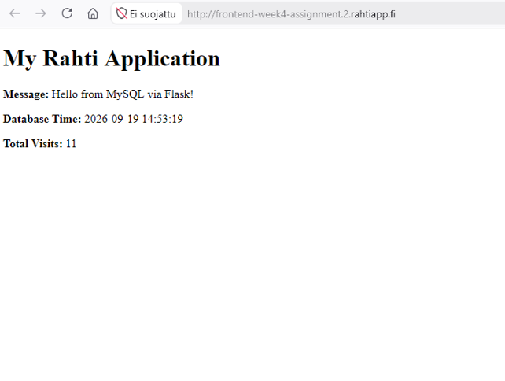
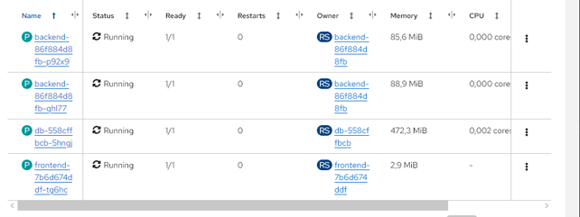
Running pods showing the database, frontend and two replicas of running initial backend.Also, pod recration test for db and backend. Pod recovery and data persistence worked well.
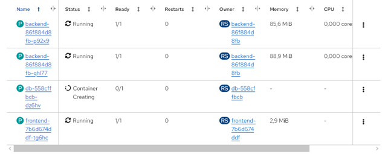
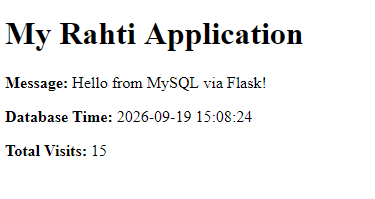
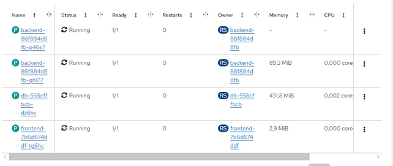
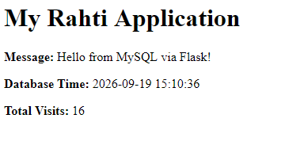
Backend updated to v1.0.1 successfully. The new version is live and the persistent database history is fully retained:
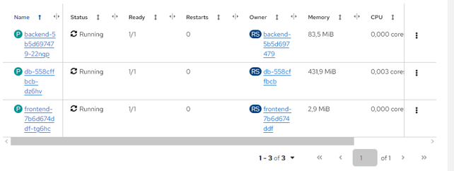
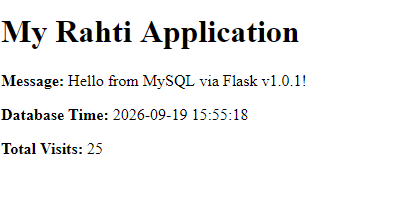
ConfigMaps are used for non-confidential configuration data, like URLs or environment variables [1]. Secrets are designed specifically to store sensitive data, like MySQL passwords, keeping them encrypted in the cluster and out of the application code and Git repository [2].
In Docker Compose (cPouta) volumes are tied directly to the local hard drive of the specific virtual machine [3]. In Rahti (Kubernetes), Persistent Volumes utilize a network storage layer. If a database pod crashes and is rescheduled onto a completely different physical server in the cluster, it still attaches to the exact same data [4].
During the recovery experiment, a new pod appeared instantly because the ReplicaSet constantly monitors the cluster to ensure the actual number of running pods matches the desired configuration. The frontend communicates with these backend pods without knowing their individual IP addresses by using a Kubernetes Service, which acts as an internal load balancer [5].
The Rahti project has a strict 4.0 CPU core quota limit. The default 'RollingUpdate' deployment strategy caused a deadlock because it tried to start the new v1.0.1 container before killing the old one, exceeding the CPU quota. This was solved by changing the deployment strategy to 'Recreate', which terminates the old pods first to free up CPU space before starting the new ones. Also, there were initially some problems with port configurations. The app did not work on Chrome or Brave browser, so this required enabling Edge TLS secure route in Rahti.
Docker Compose on cPouta is tied to a single machine requiring manual intervention for networking (security groups, floating IPs) and management. Rahti is a declarative cluster environment that automatically manages workloads, internal networking via Services, external routing via public Routes, and provides built-in mechanisms for auto-healing and scaling.
Integrating the OpenWeather API into the application to retrieve and display live weather data for Oulu.
Oulu Weather: Loading...
Backend deployment configuration in Rahti, where the API key is injected as the OPENWEATHER_API_KEY environment variable directly from the weather-secret Secret.
This frontend JavaScript code fetches the weather data from the Flask backend proxy so the API key is never exposed to the browser.
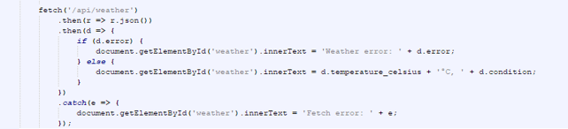
Developer Tools show a successful HTTP 200 OK status for the /api/weather network request.
OAuth is a technical standard for authorizing users. It is a protocol for passing authorization from one service to another without sharing the actual user credentials, e.g. username and password. A user can sign in to one platform and then perform actions on another platform [1].
Authentication confirms who a user is to grant them entry into a system, while authorization decides which resources they are allowed to access. The key difference between SAML and OAuth is that SAML handles authentication, meaning verifying user identity, whereas OAuth handles authorization, meaning managing user privileges. SAML is primarily used to prove identity for Single Sign-on, while OAuth ensures users and applications only interact with their given permissions. Both are different protocols, but they are often used with SSO [1].
SAML is widely used for enterprise and government identity federation, including modern enterprise platforms and legacy systems, where enterprises require centralized identity management, user attribute exchange and seamless SSO across multiple business applications[2].
OAuth is used when securing REST APIs and microservices using granular permission scopes, building mobile or native applications that benefit from lightweight JSON tokens, and for enabling third-party integrations to access specific user resources without exposing passwords [2].
1. https://www.cloudflare.com/learning/access-management/what-is-oauth/
2. https://auth0.com/intro-to-iam/saml-vs-oauth
YAML is a human-readable data serialization language that is often used for writing configuration files. YAML files are simple to read since they use Python-style indentation to determine structure and nesting. Features of YAML come from Perl, C, XML, HTML and other languages. Since YAML is a superset of JSON, JSON files are valid in YAML. When creating objects in Kubernetes, the Kubernetes API can be used to create the object. The request to the API includes object specification in JSON, but often the required information is provided to kubectl as a YAML file [2].
Although both YAML and JSON work technically, YAML is easier for humans, because it is cleaner to read and less noisy, and more widely used in the community [1]. JSON format is more machine-like in its data representation than YAML, including things like curly brackets for objects, colons to separate key-value pairs, square brackets for arrays and quotation marks to enclose strings. Support for different data types is narrower compared to YAML. Also, JSON does not support comments, and versioning between different versions is not as simple as with YAML [3].
[1] https://kubernetes.io/blog/2025/11/25/configuration-good-practices/
[2] https://www.redhat.com/en/topics/automation/what-is-yaml
[3] https://aws.amazon.com/compare/the-difference-between-yaml-and-json/
Open data portals are centralized web platforms that catalog and store public datasets for general use. Open Data is the information collected, produced or paid for by the public bodies and made available for re-use for any purpose. Benefits of this are diverse and include things such as improving the efficiency of public administrations and economic growth [1]. An open license grants permission to use the data freely for any purpose. Data can typically be population census data, maps, and info about bus locations [2].
Choosing the right format for open data helps to ensure the data can be simply managed and reused. Maximizing the reuse of data may require from a publisher to use a number of formats and structures to suit users’ needs. Usually, it is the native format data is handled, but it might be rare so using format like .csv is more universal and machine-readable format[ 3]. When using .csv documentation is very important since it might be impossible to guess the meaning of the different columns. CSV is just one format option and there are many others, like JSON, XML, RDF, Spreadsheets and Text Documents. Choosing open file formats should be considered, since software for using them are available for anyone. Closed formats, like many spreadsheets (e.g. Excel) are heavily tied to a company and their software, which can cause limitations to use the data [4].
1. https://data.europa.eu/en/dataeuropa-academy/what-open-data
2. https://avoindata.suomi.fi/en/faq/open-data-service
3. https://data.europa.eu/elearning/en/module9/#/id/co-01
4. https://opendatahandbook.org/guide/en/appendices/file-formats/
IPFS is content-addressed storage, meaning every file gets a cryptographic CID derived from its bytes. The same file always resolves to the same CID, regardless of which node stores it. On the other hand, Amazon S3 is location-addressed storage, where files live at bucket-specific URLs that are controlled by AWS [1]. CID (Content Identifier) is computed by combining the hash of the data with its codec. Since it is based on content, you can fetch data by what it is, not where it is stored. Data is verified by recomputing the CID and comparing it to what is requested [2].
The largest decentralized storage providers are Filecoin, Arweave, Sia, Storj and BitTorrent File System. On average in 2023, the cost for 1 TB of decentralized data storage was 2,11 $ in 2023, which is much lower compared to average of 9, 88 $ to top centralized storage providers. The difference for an individual might be low, but for businesses or organizations costs can add up [3].
Another key aspect is availability. For many centralized storage systems availability is 99,99 % of the time. For IPFS, it depends on pinning. Upload and download performance is predictable and consistent in centralized storage. For IPFS, initial upload times are typically slower, but subsequent identical uploads are instant due to deduplication. For download performance, IPFS varies significantly. Popular content may download faster than in traditional storage due to multiple sources, while rare content might be slow [4].
S3 excels at traditional cloud storage needs, with a very mature ecosystem and enterprise features. IPFS is for immutable, public content where integrity and decentralization matter[1].
1. https://ipfs.ninja/blog/ipfs-vs-s3
2. https://docs.ipfs.tech/concepts/how-ipfs-works/#how-ipfs-represents-and-addresses-data
3. https://www.coingecko.com/research/publications/centralized-decentralized-storage-cost
4. https://tarlo.app/blog/ipfs-vs-traditional-cloud-storage/
The GitHub Actions pipeline code responsible for automatically building the container and updating the Rahti cluster on every push.
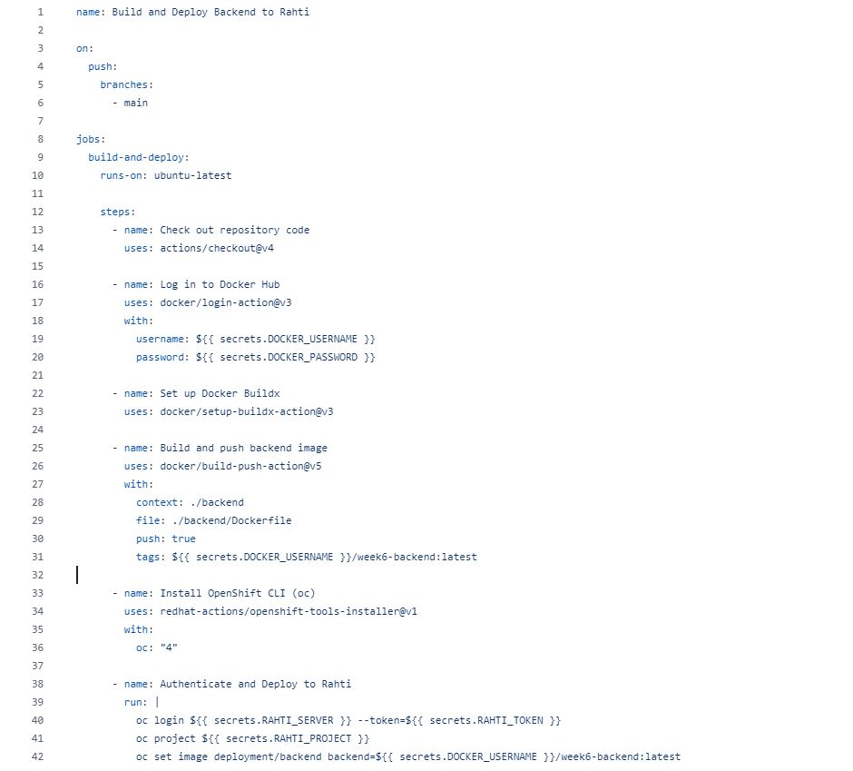
Visual confirmation that the automated CI/CD workflow ran to completion and successfully deployed the latest commit without errors.
Live container logs in OpenShift, demonstrating that the backend application correctly formats its traffic data as structured JSON objects.
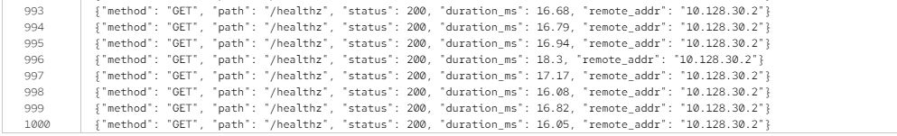
Proof the application is fully stable in the Rahti environment, as the active pod is running smoothly and all health checks are passing without warnings.
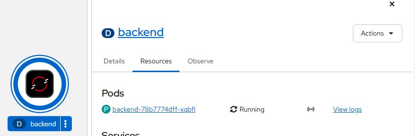
In continuous integration developers frequently merge code changes into a central repository where automated builds and tests run. By doing it so, you avoid integration challenges that can happen when waiting for release day to merge changes into the release branch. To integrate constantly, the team will have to write automated tests for each new feature, improvement or bug fix. This often requires a server that monitors the main repository and run tests automatically. Typically, the developers need to merge their changes as often as possible, usually once a day at least. By doing this, fewer bugs end up into the production since they are captured early. Also, developers can focus on one task as they are alerted as soon as they break the build, and can work on fixing it before moving to another task. Testing costs also tend to decrease, and QA team can spend less time on testing and focus improving the quality control [1].
Continuous delivery extends CI since it automatically deploys all code changes to environment after the build stage, so you can deploy your application any time by clicking a button. To get the full benefits of continuous delivery, you should deploy to production as early as possible to make sure that you release small batches that are much easier to troubleshoot for possible problems. Since continuous delivery is extension of CI, continuous integration needs to be in order. Also, the deployments need to be automated. Although the trigger for it is manual, but once a deployment is started human should not need to intervene. Continuous delivery offers many benefits. Team does not need to spend days preparing for a release anymore. Also, by releasing more often, the feedback loop from customers accelerates [1].
Continuous deployment is one step further from continuous delivery. In it, every change that passes all stages of your production pipeline is released to your customers. Only a failed test prevents a new change to be deployed to production. This requires expectational testing culture and test suites, since they determine the quality of releases. Feature flags are inherent part of releasing to make sure coordination works between other departments. By using continuous deployment, development is faster since there is no pause for releases, since pipelines are triggered automatically for every change. Also, customers see improvements every day, rather than every month [1].
A metric is a measurement of a service captured at runtime. The moment of measurement is known as a metric event. Metrics are important indicators of availability and performance for applications and requests. Metrics are intended to provide statistical information in aggregate. They can be used to provide data about user experience, alert of an outage or trigger a scale-up deployment upon high demand. Measurements can be captured by instruments, such as counters and histograms. Questions typically asked include such as what is the CPU or memory usage of a process, or what is the total number of bytes read by a service, per protocol type [1].
Log can be defined as a recording of an event. It is a timestamped text record and can be structured or unstructured. Most programming languages have built-in logging capabilities or libraries. Structured logs have defined schema that downstream system can reliably parse and interpret. Format can be JSON or some other. Unstructured logs on the other hand, do not have consistent structure. For humans they can be more easier to follow and are often used in development, but for production observability purposes, they are difficult to parse and analyze at scale [2]. Logs typically answer questions like what happened in a specific instance? [3]
Traces are the path of a request through your application. They give the big picture of what happens when a request is made to an application. Span is a unit of work and are the building block of traces [4]. Traces answer questions about where it happened. They can be used to question things like how a request travels through microservices, which server adds the most latency or where did a request fail [5].
1. https://opentelemetry.io/docs/concepts/signals/metrics/
2. https://opentelemetry.io/docs/concepts/signals/logs/
3. https://aws.amazon.com/blogs/dotnet/adding-observability-to-net-microservices-on-eks-with-adot-auto-instrumentation-and-helm/
4. https://opentelemetry.io/docs/concepts/signals/traces/
5. https://grafana.com/docs/grafana-cloud/learn-and-build/telemetry-signals/get-started/what-are-telemetry-signals/
Liveness probe determines when to restart a container. For example, if an application is running, but is unable to make progress a liveness probe could restart the container in such a state, which could make the application more available despite bugs. Kubelet restarts that specific container, when if fails more times than the configured tolerance. When the tolerance is reached, there is a grace period for the kubelet to wait between triggering the shutdown of the failed container and forcing the container runtime to stop that container. However, liveness probes should be configured carefully to ensure that they truly are used for unrecoverable application failure [1].
Readiness probe determines when a container is ready to accept traffic. It is useful in situations, when application performs time consuming initial tasks, such as loading files and establishing network connections. The probe runs on the container during its whole lifecycle. For a failed readiness probe, the kubelet continues running the container that failed checks, and also continues to run more probes. Since the check failed, the kubelet sets the Ready condition on the Pod to false. This causes the EndpointSlice controller to remove the Pod’s IP address from the EndpointSlices of all Services that match the Pod [2].
1. https://kubernetes.io/docs/concepts/workloads/pods/pod-lifecycle/#when-should-you-use-a-liveness-probe
2. https://kubernetes.io/docs/concepts/workloads/pods/pod-lifecycle/#when-should-you-use-a-readiness-probe
Sensitive data should never be stored as plaintext in workflow files. Insufficient credential usage allows attackers to discover and exploit pipeline secrets because of poor access control, improper credential storage and too broad permissions assigned to deployment tokens. For example, if credentials are exposed to anyone with read access to the repository, they continue to appear in the commit history even if they are deleted from the branch [1].
GitHub Actions uses Secrets, which are encrypted environment variables that can be used in organization, repository or repository environment. The created Secrets are available in GitHub Actions workflows. They use Libsodium sealed boxes, meaning they are encrypted before reaching GitHub. GitHub Actions can only read secrets if they are explicitly included in a workflow. To make secrets available for actions, they must be set as an input or environment variable in the workflow file [2].
1. https://owasp.github.io/www-project-top-10-ci-cd-security-risks/CICD-SEC-06-Insufficient-Credential-Hygiene
2. https://docs.github.com/en/actions/concepts/security/secrets